Deset testovacích úloh se známým výsledkem (analytické řešení nebo normový výpočet) a průvodce ukázkami. Každá má postup a tabulku očekávaných hodnot.
FEA Studio.bat ve složce programu.examples\user_tests v instalaci (T1_…step až T10_…step); znovu je vytvoří .venv\Scripts\python.exe -m examples.user_tests..venv\Scripts\python.exe -m verification.run_all. Výsledek musí končit řádkem VÝSLEDEK: všechny kontroly prošly.Tip: hodnoty z MKP se od analytických liší o síť; tolerance je u každé hodnoty. Posuvy do ~3 %, napětí mimo singularity do ~5 %. Větší odchylka = chyba (pošlete projekt .fea a popis).
Ocelový nosník 200 × 20 × 10 mm, vetknutý na jednom konci; na druhém síla 100 N kolmo na výšku 10 mm.
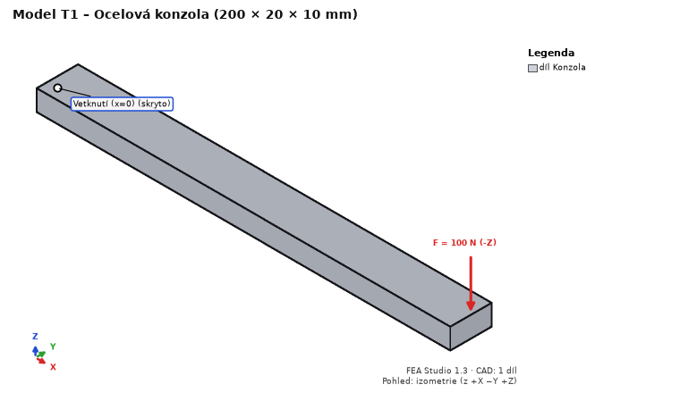
T1_cantilever.step.| Veličina | Očekávaná hodnota | Kde odečíst |
|---|---|---|
| Průhyb konce (posuv Z) | 0,763 mm (Timoshenko), MKP ~0,76 mm (±3 %) | Výsledky → Posuv Z, souhrn |
| σx v polovině délky na horní / dolní ploše | +30 / −30 MPa (±5 %) | Napětí σx, klik do modelu v x = 100 |
| Reakce ve vetknutí Fz | 100 N | souhrn výsledků – reakce |
| Max. von Mises | u vetknutí, označeno jako singularita (hrana vazby) | tabulka Nejvyšší napětí |
Únava na stejném modelu: krok Únava → kanál stavu se silou: sinus, střed 0, amplituda 1, 1000 kmitů v bloku, 100 bloků, znaménkový von Mises, vlastní S-N pro ocel: SD = 20 MPa, ND = 10⁶, k = 5, k2 = 0. V uzlu na horní ploše v x = 100: amplituda 30 MPa (±5 %), poškození za 100 bloků ≈ 0,74, bezpečnost ≈ 1,06.
Osmina desky (šířka 100, tloušťka 5 mm, otvor Ø10, tah 100 MPa): model 150 × 50 × 2,5 mm se čtvrtinou otvoru v rohu.
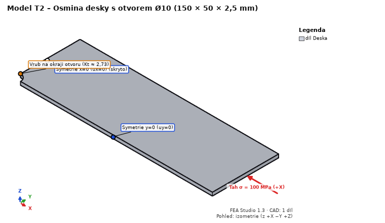
T2_plate_with_hole_eighth.step, Ocel S235.| Veličina | Očekávaná hodnota | Kde odečíst |
|---|---|---|
| σx max na okraji otvoru (x = 0, y = 5) | ≈ 303 MPa (Kt,n = 2,729 × 111,1 MPa, ±5 %) | Napětí σx |
| Reakce Fx v rovině x = 0 | 12 500 N (100 MPa × 50 × 2,5) | souhrn – reakce |
| Klasifikace maxima | skutečné místo (ne singularita) | Nejvyšší napětí |
Čtvrtina prstence ri = 20, ro = 40 mm, výška 10 mm.
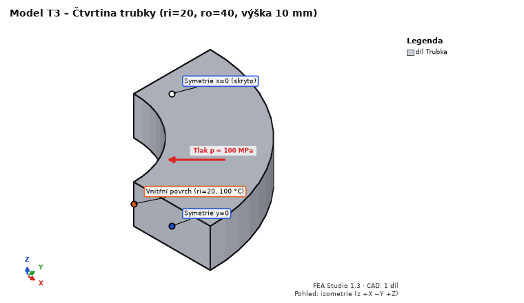
T3_pipe_quarter.step, Ocel S235.| Veličina | Očekávaná hodnota |
|---|---|
| σθ (obvodové) na ri / ro | 166,7 / 66,7 MPa (±5 %) |
| von Mises na ri | 233,3 MPa (±5 %) |
| Radiální posuv vnitřní plochy | 0,01873 mm (±3 %) |
Teplo na stejném modelu: krok Teplo → nový ustálený stav: vnitřní plocha Teplota 100 °C, vnější plocha (R 40) 20 °C. Výsledky (stav „Teplo: …“), S235, λ = 53,3 W/(m·K):
| Veličina | Očekávaná hodnota |
|---|---|
| Teplota v r = 30 mm | 53,2 °C (logaritmický průběh) |
| Tepelný tok |q| v r = 30 mm | ≈ 205 000 W/m² |
| Teplo vnitřní plochou | ≈ 96,6 W (tabulka tepla okrajových podmínek), bilance do 0,1 % |
Hřídel Ø20 × 200 mm, vetknutá na x = 0, na druhém čele krouticí moment 100 N·m.
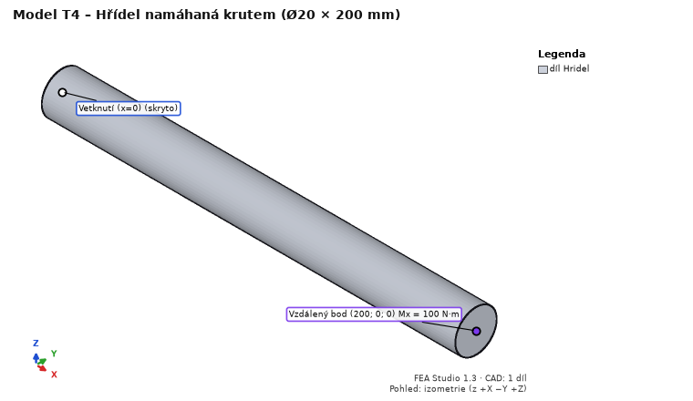
T4_shaft.step, Ocel S235; vetknutí čela x = 0.| Veličina | Očekávaná hodnota |
|---|---|
| Smykové napětí na povrchu (τ = T/Wk) | 63,66 MPa; von Mises na povrchu ≈ √3 · 63,66 = 110 MPa |
| Zkroucení konce | 0,903° (posuv na obvodu konce ≈ 0,158 mm) |
| Reakční moment ve vetknutí | 100 000 N·mm |
Dvě přeplátované desky 10 mm, šroub ISO 4017 M10 8.8 s podložkami a maticí (názvy z CADu).
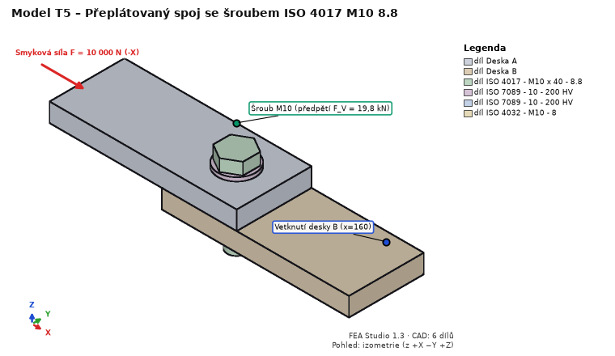
T5_joint_M10.step, desky Ocel S235.| Veličina | Očekávaná hodnota | Kde |
|---|---|---|
| Stav Předpětí šroubů – síla ve šroubu | F_V = 19 760 N | dok Spoje – využití |
| VDI 2230 F_M,zul (μ_G = 0,12) | 29 603 N | posudek šroubu |
| EN 1993-1-8 F_v,Rd (střih v závitu) | 22 268 N | posudek šroubu |
| EN 1993-1-8 F_b,Rd (otlačení, e1 = e2 = 20) | 43 636 N | posudek šroubu |
| Smyk přenesený spárou + šroubem | 10 000 N | síly ve spoji |
Pásnice 10 mm, stojina 10 × 100 mm, dva koutové svary a5 délky 100 mm (tělesa „Svar …“).
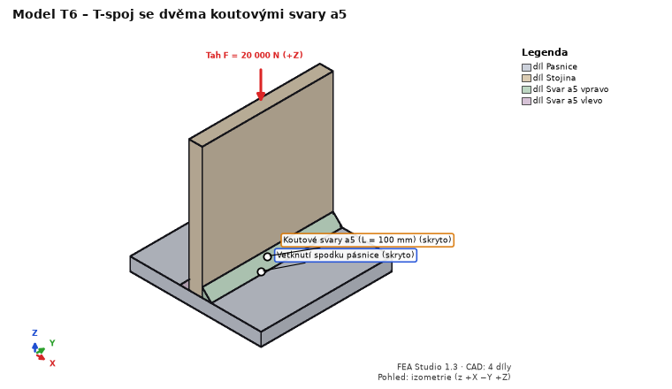
T6_t_joint_welds_a5.step, Ocel S235. Spoje → Rozpoznat spoje… → potvrdit 2 svary.| Veličina | Očekávaná hodnota |
|---|---|
| Účinná výška a / délka svaru ze sítě | 5,0 mm / 100 mm |
| Tah: součet sil úseků obou svarů | 20 000 N |
| Podélný smyk: průměrné τ∥ = F / (2·a·L) | 10 MPa |
Dvě tyče 100 × 10 × 10 mm z PLA: jedna tištěná nastojato (vrstvy kolmo na délku), druhá naležato.
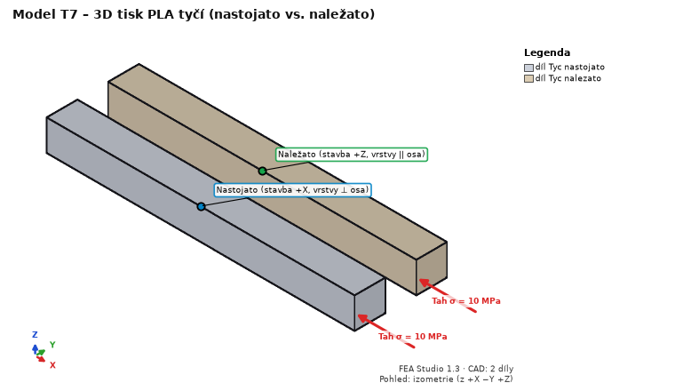
T7_printed_bars.step. Materiál obou dílů Tisk PLA Bambu Basic.| Veličina | Očekávaná hodnota |
|---|---|
| Prodloužení tyče nastojato (tah kolmo na vrstvy) | σL/E_z = 0,4630 mm |
| Prodloužení tyče naležato (tah v rovině vrstvy) | σL/E_xy = 0,3731 mm |
| 3D tisk – bezpečnost (Tsai-Hill) | nastojato 3,50 (Rm_z/σ), naležato 3,90 (Rm/σ) |
| Reakce Fx | 2 000 N |
Pak zapněte „skořepina + výplň“ (3 perimetry, výplň 20 %): tuhost i bezpečnost klesnou; v řezu Skořepina / jádro uvidíte podíl plné skořepiny.
Ocelový nosník 100 × 10 × 10 mm vetknutý na jednom konci, na volném konci harmonická síla 100 N (ověřovací úloha Y2).
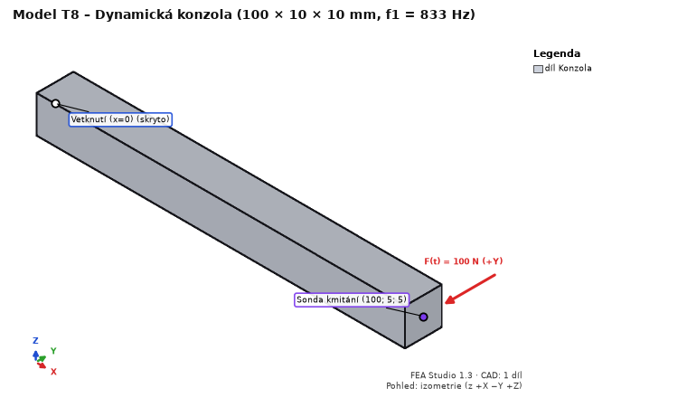
T8_cantilever_10x10x100.step, Ocel S235.| Veličina | Očekávaná hodnota | Kde odečíst |
|---|---|---|
| 1. a 2. vlastní frekvence (ohyb v y a z) | 833 Hz (Euler–Bernoulli 835,5 Hz, Timoshenko o 0,3 % méně; ±1 %) | karta Dynamika – tabulka módů |
| Součet efektivních hmot obou módů ve směru y | 61 % (E–B 61,3 %); u čtvercového průřezu se může rozdělit mezi oba módy | tabulka módů |
| 3. a 4. mód (2. ohybový), 5. mód (krut), 6. mód (podélný) | ≈ 5 000 Hz (E–B 5 236 Hz), ≈ 7 390 Hz, ≈ 12 970 Hz | tabulka módů |
| Statický průhyb konce (stav Síla Y 100 N) | 0,190 mm (E–B FL³/3EI = 0,1905 mm) | Posuv Y, souhrn |
| Špička |uy| v sondě (rezonance) | 4,62 mm = 24,2 × statický průhyb (E–B 0,9707/(2ζ) = 24,27; ±2 %) | karta Dynamika – graf FRF, sonda |
| |uy| při 10 Hz | 0,190 mm (kvazistaticky = statický průhyb) | graf FRF |
Pro ζ = 1 % se špička zdvojnásobí (odezva v rezonanci je nepřímo úměrná tlumení).
Dva ocelové kvádry 20 × 20 × 10 mm na sobě, na horní ploše tlak 10 MPa, styk bez tření (ověřovací úloha K1 – „patch test“).
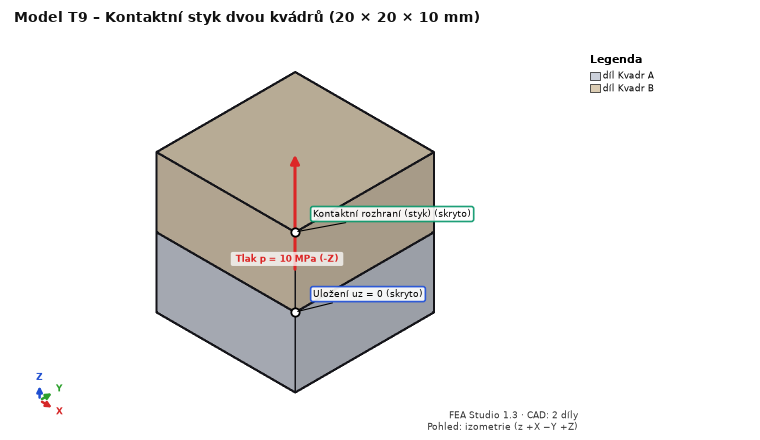
T9_contact_blocks.step, Ocel S235.| Veličina | Očekávaná hodnota | Kde odečíst |
|---|---|---|
| Kontakt – tlak | 10,0 MPa rovnoměrně (±0,5 %) | veličina Kontakt – tlak |
| Normálová síla páru | 4 000 N (10 MPa × 400 mm²) | karta Kontakty |
| Posuv horní plochy | −0,000953 mm (2ph/E + p/K, K = 50·E) | Posuv Z |
| Kontakt – rozevření, stav styku | 0 mm, celá plocha ve styku | veličiny kontaktu |
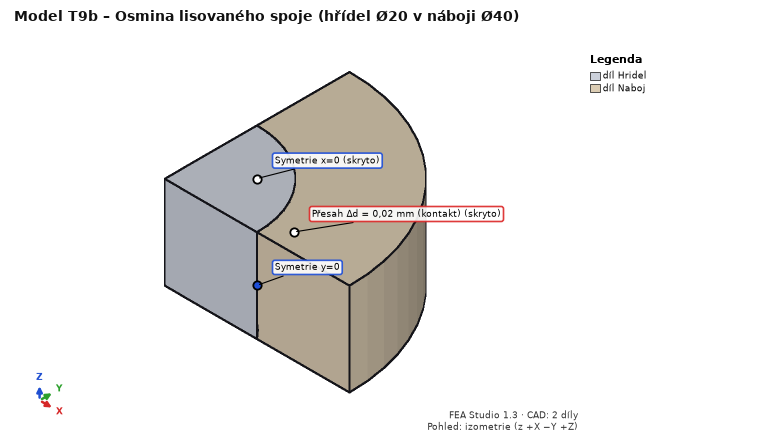
T9b – lisovaný spoj (T9b_press_fit_eighth.step, ověřovací úloha K4): osmina hřídele Ø20 v náboji Ø20/40, délka 2 × 10 mm. Vazby symetrie: x = 0 → ux = 0, y = 0 → uy = 0, z = 0 → uz = 0. Prázdný zatěžovací stav „Lis“. Kontakty: pár Hridel – Naboj, typ Přesah (lisovaný spoj), přesah −0,01 mm (Δd = 0,02 mm). Síť 1,25 mm (výpočet asi 1 min). Očekávané hodnoty (Lamé): tlak ve spoji 78,75 MPa (MKP průměr ~80 MPa), obvodové napětí náboje na vnitřním povrchu 131,3 MPa, radiální posuv vnitřního povrchu náboje +7,4 µm, hřídele −2,6 µm.
Klika r = 20 mm, ojnice l = 80 mm, píst; klika se otáčí stálou úhlovou rychlostí 100 rad/s, na píst působí síla 1 000 N proti směru X (ověřovací úloha MB1).
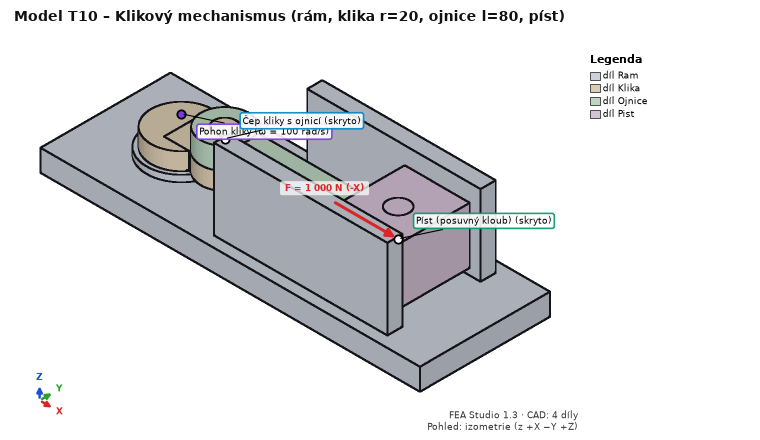
T10_crank_r20_l80.step, materiál všech dílů Ocel S235.| Veličina v čase t = 0,010472 s (klika 60°) | Očekávaná hodnota |
|---|---|
| Poloha pístu x (těžiště = osa čepu) | 88,102 mm (r·cos φ + √(l² − r²·sin² φ)) |
| Rychlost pístu vx | −1 953,8 mm/s |
| Zrychlení pístu ax | −75 022 mm/s² |
| Moment pohonu bez setrvačnosti (tělesům ručně hmotnost 0,001 kg a nulová setrvačnost) | |M| = F·|v|/ω = 19 538 N·mm |
| Moment pohonu s hmotností z CAD (ocel) | |M| ≈ 19 250 N·mm (setrvačné síly ojnice a pístu) |
| Rovnováha těles, výkonová bilance | ≈ 0 (souhrn výsledku pohybu) |
Znaménko rychlosti a momentu závisí na směru osy kloubu kliky (+z = proti směru hodinových ručiček při pohledu shora). Pak zkuste Převést do MKP… pro ojnici (okamžik maxima reakce v čepu pístu), jako v ukázce 8.
python -m fea_core run study.json.Pošlete uložený projekt .fea (Ctrl+S), text z doku Log řešiče (Ctrl+A, Ctrl+C), co jste čekali a co program udělal. U pádu i obsah okna příkazové řádky, pokud bylo otevřené.